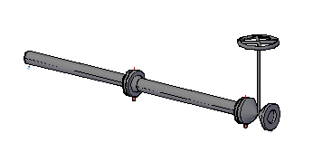

A sample to create and connect piping in the 3D model is installed with the SDK. The project name is CreatePipeline.
The sample illustrates how to use the high-level APIs that are required to add spec-based piping components to the 3D model.

Running the sample code creates the pipeline shown above.
The high-level APIs are implemented by managed classes such as PipingObjectAdder and SpecManager. The sample illustrates how you can use them to:
For more information: see CreatePipeline Readme.docx in the sample folder.